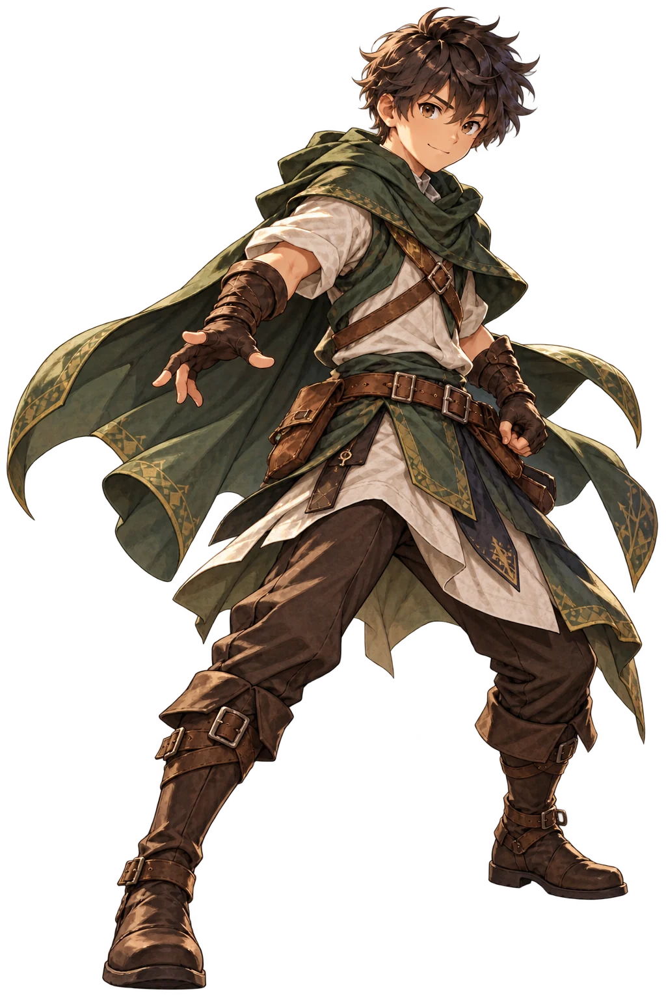
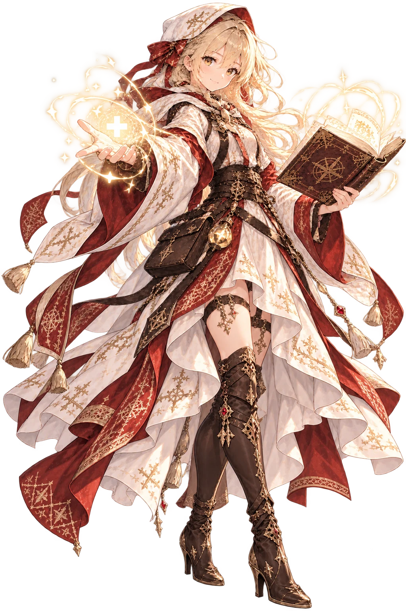
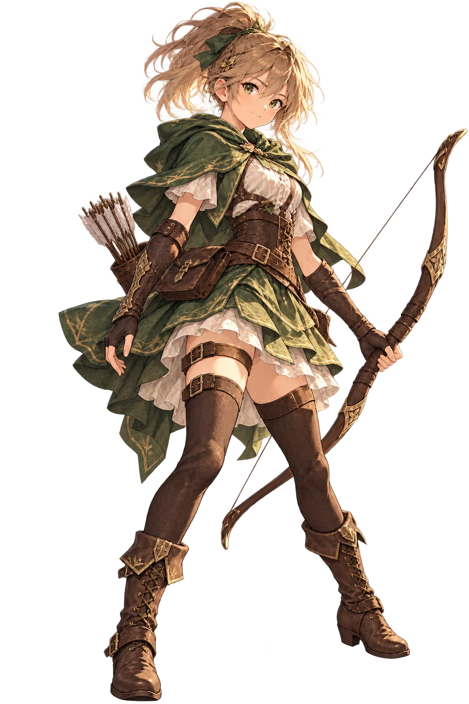
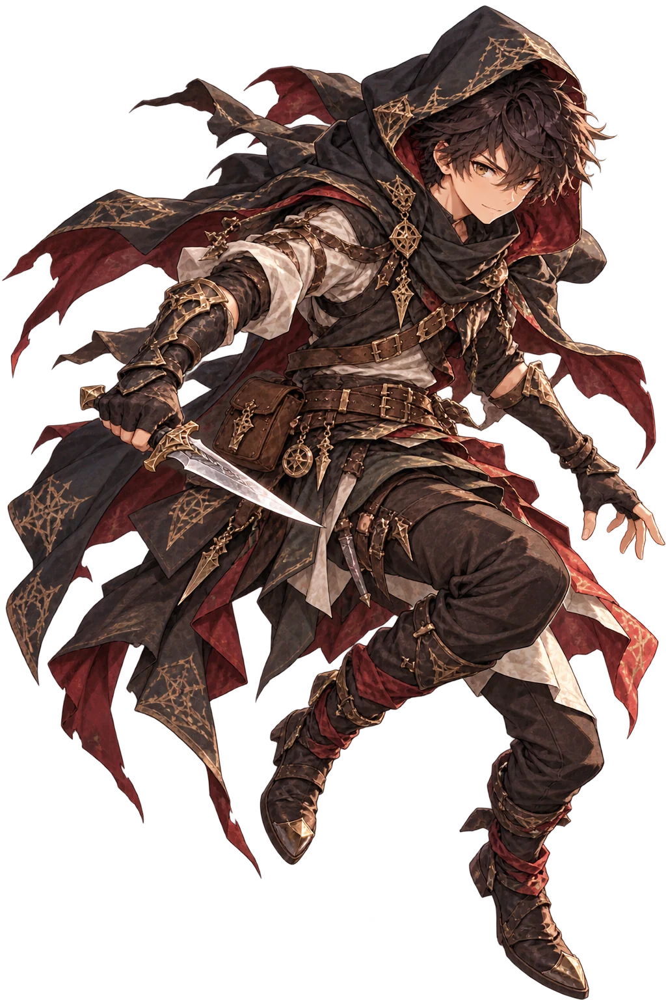
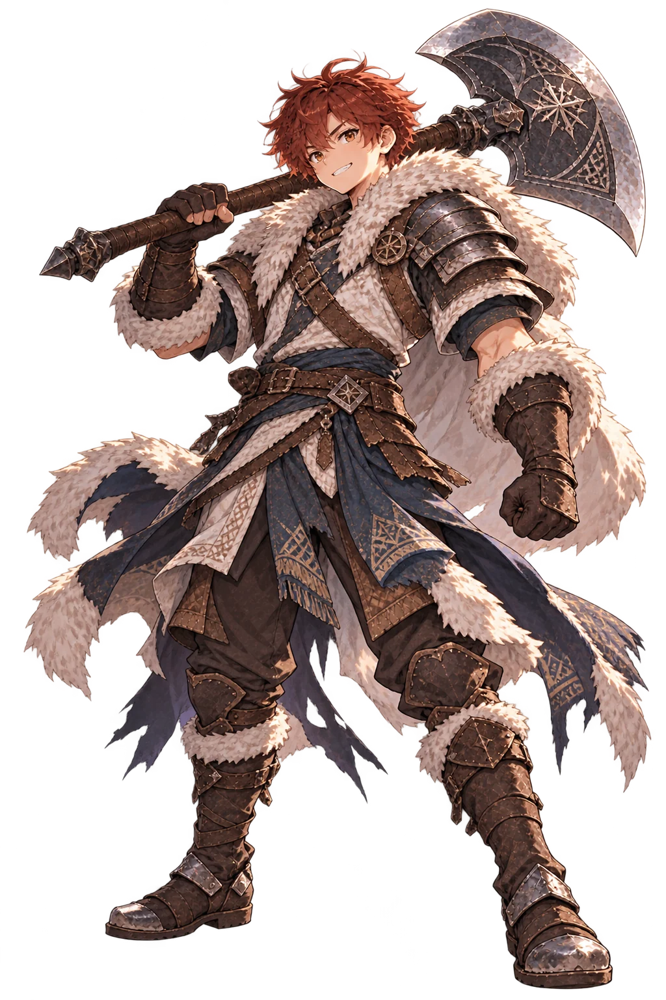
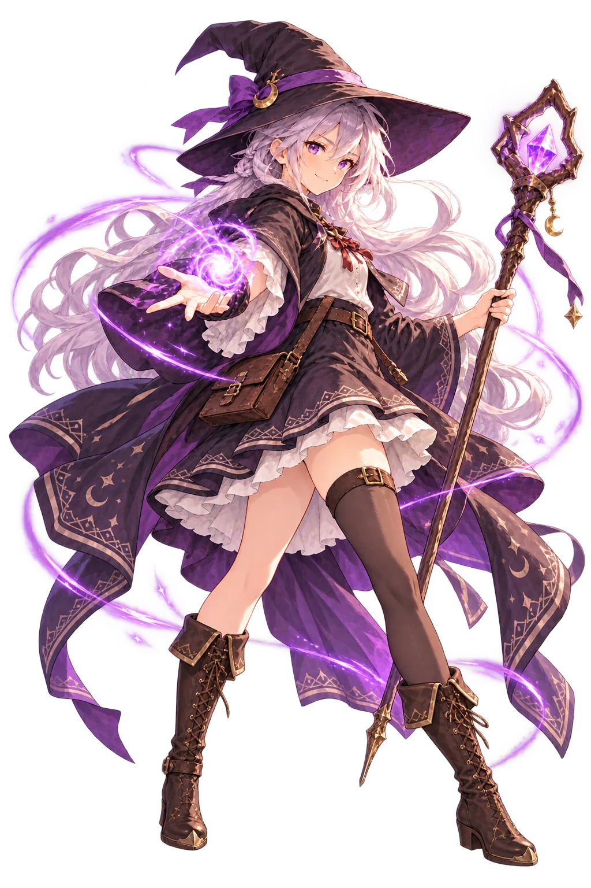
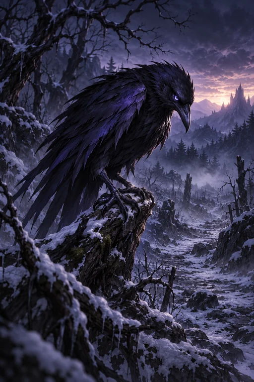
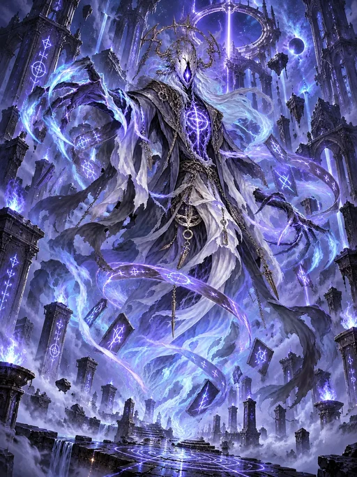
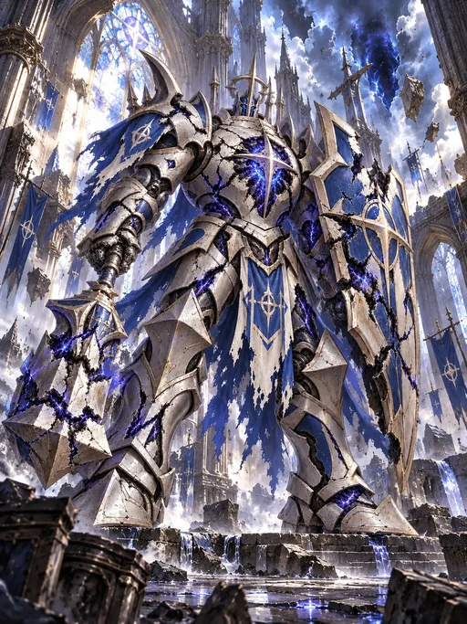

HERO · GUARDIANSam
Guardian · Aster
Sam sets out after the sealed letter reporting the death of his father, Captain of the Guardians of Aster. His journey begins with Lira and Rhea.
Evolution: Young Sam → Sam of Aster → Sam, Last Guardian
TRY BATTLE SIMULATOR → 
HERO · SUPPORTLira
Rune Scholar · Healer
A scholar of ancient runes, Lira joins Sam near the Ruined Crossing and supports his search for answers.
Evolution: Three evolution stages in game
TRY BATTLE SIMULATOR → 
HERO · ARCHERRhea
Ranger · Archer
A capable archer who meets Sam at the Old Watchtower and helps guide the party toward the Northern Gate.
Evolution: Three evolution stages in game
TRY BATTLE SIMULATOR → 
HERO · STRIKERDren
Shadowblade · Featured Summon
A featured summon hero with a shadowblade identity. Discover his stages and runes in KardRune.
Evolution: Three evolution stages in game
TRY BATTLE SIMULATOR → 
HERO · VANGUARDTor
Frostcrown · Vanguard
Tor rises from warrior to the recognized Guardian of Frostcrown and eventually the King of Frostcrown.
Evolution: Tor → Tor, Guardian of Frostcrown → Tor, King of Frostcrown
TRY BATTLE SIMULATOR → 
HERO · MAGEAria
Arcanist · Magic
A magic-focused hero featured in KardRune and its evolution roster.
Evolution: Three evolution stages in game
TRY BATTLE SIMULATOR → 

